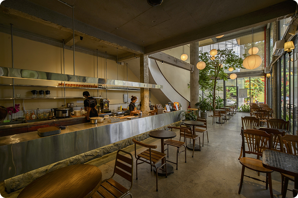

Cafés especiais
Bebidas artesanais à base de espresso, cold brews e blends sazonais.
Localizado no coração da cidade, o Cup & Code é mais do que uma cafeteria
— é um refúgio
para sonhadores criativos e amantes de um bom café. De
espressos intensos a lattes
cremosos, cada xícara é preparada com cuidado, propósito e um toque de
poesia. Seja
para trabalhar, relaxar ou apenas escapar da correria, aqui você encontra
um um momento
de pausa em cada golpe.
Bebidas artesanais à base de espresso, cold brews e blends sazonais.
Produtos frescos, feitos localmente e sempre deliciosos.
Ambiente aconchegante, Wi-Fi grátis e tomadas disponíveis.
Saraus, apresentações acústicas e encontros culturais.
Embalagens ecológicas e praticidade para levar seu café preferido.